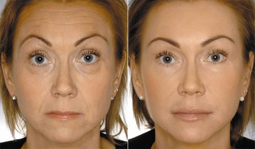

Taisiya Povaliy: "Men bugun sizlarga gapirib bergan narsamdan keyin sizlar kosmetologlarni esingizdan chiqarasizlar va 39 руб. ga eng kamida 20 yilga yosharasizlar. «O`zimda sinab ko`rdim»".
Bugun mashxur artistning yoshi 53da. Ammo uning muxlislari u 25 yosh qizdek ko`rinadi deb ta`kidlashadi. Bunday katta yoshda u qanday qilib yoshlik va ajoyib tashqi ko`rinishni saqlab qolishga erishayapdi. Hasadgo`ylar u ko`plab plastik operatsiyalarni boshdan kechirgan deb, muxlislari bo`lsa aksincha, buning hammasi uning geni va sog`lom turmush tarzi sababli deb ta`kidlashadi. Ammo gap nimada bo`lmasin, yulduz hozirda go`yo yaqinda institutni tugatgan qizdek ko`rinadi.
(Taisiya Povaliy o`z turmush o`rtog`i Igor bilan 2019 yil)
Biz Taisiya bilan uchrashdik va uning abadiy yoshlik va go`zallik sirlari xaqida batafsil so`rab oldik.
"Men kichik bir yangilikni sizlarga ochishdan boshlashni xohlayman, — tan oldi qo`shiqchi, — roppa-rosa 3 yil oldin men agarda undan ham ko`p bo`lmasa, deyarli 60 yoshli ayoldek ko`rinardim. Mening o`sha paytdagi rasmlarim saqlanib qolgan va taxririyat meni o`sha rasmlarni chop etishga roziligimni olishga muvaffaq bo`ldi"
(Chap tomondagi suratda Taisiyaning yoshi 49da. O`ng tomondagi suratda Taisiyaning yoshi 52da.)
"Men o`zimga bunday ko`rinishni shunchaki ep ko`ra olmasdim"
— Rasmlarda natija yaqqol ko`rinayapdi. Hattoki men ham bu o`zgarishlar insonni shokka tushiradi deb aytgan bo`lar edim! Siz bunga qanday erishdingiz?
— Men bilishimcha, bunga juda oson erishdim. Yo`q, oxirgi 8 yilda men plastik operatsiya qildirmadim. Men sizning o`quvchilaringiz bilan o`zimning kichik, ammo dahshatga soladigan darajada oddiy sirimni baham ko`raman. (Jilmayadi)
— Bizning jurnalimizni 340 mingdan ortiq ayol o`qiydi, va o`ylaymanki, ularning hammasi hozir sabrsizlik bilan kutishmoqda...
— Yana plastik operatsiyaga murojaat qilish vaqti kelganida, men o`zimning bundan oldingi, uncha yaxshi bo`lmagan tajribamni esga oldim. Keyin AQSH dollaridagi 5ta nolli operatsiya baxosiga qaradim va bu fikrdan voz kechishga qaror qildim. Ha, artistlar masaldagidek katta miqdorda pul topadi deb o`ylamang. (Jilmayadi). Hamma narsaning chegarasi bor va aql hamisha toza va xissiyotlarga berilmagan bo`lib qolishi kerak. Xullas, bir to`xtamga kelish maqsadida kosmetologlarga uchrasha boshladim. Ular menga xar xil bir-biridan qimmat bo`lgan mo`jizaviy vositalarni maslahat qilishardi va shu bilan birga bu vositalar baribir botoks inyeksiyasi bilan taqqoslash mumkin bo`lgan natija bermaydi deb ogohlantirishardi. botoksni hozir qanday qilishlarini esa siz bilsangiz kerak, bu muojaladan keyin yuzning yarmi "tarvaqaylab" ketadi. (Kuladi)
Xullas, har doimgidek, umidsizlikka tusha boshlaganimdan keyin najot keldi.
Baliqchi baliqchini uzoqdan taniydi
Mening bu najot qushini topishimga judayam mashxur va shunchaki takrorlanmas ayol- Sofiya Rotaru sabab bo`lgan. Hamma bilganidek, Sofiyaning yoshi allaqachon 70da! Аmmo u qanday ajoyib ko`rinishga ega! U hamisha men uchun ayol go`zalligining, donoligining va mukammal iste`dodining timsoli bo`lib kelgan.
Kiborlar qabullaridan birida, u yerda Sofiya ham bor edi, men undan to`g`ridan-to`g`ri uning yoshida qanday qilib bunday chiroyli ko`rinish mumkinligini so`radim. To`g`risini aytsam, gap plastik operatsiya xaqida ketsa kerak deb o`ylagandim, ammo bunday bo`lmadi. Sofiya menga ro`y-rost va ochiqchasiga uning kelini Tokiodan olib kelib bergan preparat...... ya`ni Algonika niqobi xaqida gapirib berdi.
Bu preparat tarkibida xaqiqiy oltin-mimik ajinlarni bo`shashtirib, ajinlarni ichkaridan "itarib" chiqaradigan 1 turdagi dengiz kollageni mavjud. Bu jarayondan keyin mimika erkin qoladi, bu degani esa yuz tabiiy ko`rinadi, ukollardan keyin esa aslo bunaqa bo`lmaydi...Yuz ovalini tiklaydi, va natijada, botoks inyeksiyasi natijasiga o`xshaydigan, ammo sog`liq uchun umuman zarari bo`lmagan va salbiy ta`sirlarsiz samara beradi. Axir bu ukol emasku!
Algonikadan foydalana boshlaganimdan 12 kun o`tib, do`stlarim mendan qachon buncha tez yuzimni torttirishga ulgurganimni so`rashdi!
Demak menga niqob yetib keldi. Undan foydalanishni boshladim va taxminan 3-4 kundan keyin atrofdagilar menga xushomad qilishni boshlashdi. Yana ikki-uch kundan keyin mening o`zim ham yuzimdagi o`zgarishlarni: mimik ajinlar va menda ulardan qutulishga umidim qolmagan chuqur ajinlar ham tekislana boshlaganini seza boshladim. Terimning rangi ham o`zgardi, menimcha sog`lomroq tusga kirdi.
12 kundan ketin esa mening yuzim tanimaslik darajasida o`zgardi: men o`zimni yosh qizchadek his qildim! Menga shunchaki ishoninglar, bu aqlbovar qilmas tuyg`u. Qayerdadir o`zingizning yosh aksingizni ko`rib qolsangiz bo`ldi, bir zumda kayfiyatingiz va axvolingiz yaxshilanadi!
Xuddi barcha muammolar endi xech qanday muammo emasligini xis qilasiz. Buni shunchaki xis qilib ko`rish kerak, buni so`z bilan ifodalash qiyin. Bu xaqiqiy mo`jiza emasmi? Aytgancha, kosmetologlar va qimmat klinikalar Algonika sababli millionlar yo`qota boshlashdi. Ko`plab ayollar Sofiya Rotaru bu vosita xaqida gapirib berganidan keyin niqobni sotib olisha boshlashdi.
Va haqiqatdan ham bu niqob hammaga yordam beryapdi. Kosmetologlar esa alamidan qo`llarini tishlashyapdi va men o`ylaymanki, xizmatlariga yarasha— Тaisiya, sizga bergan intervyungiz uchun raxmat. Ammo bu preparatning narxi, operatsiyaniki bilan bir hil bo`lsa kerak, shunaqami? Va uni Yaponiyadan o`rta statistika bo`yicha har bir ayol ham buyurtma qilib oldirolmaydiku.
— Umuman yo`q, Algonikaning narxi xatto bizning o`lchovlarimizga ko`ra ham juda mos keladi. Allaqachon uni olib kelish uchun Yaponiyaga borish ham kerak emas. Niqobni ishlab chiqaruvchining rasmiy saytidan Ukraina bo`ylab yetkazib berishadi.
— O`ylaymanki, bizning o`quvchilarimiz uchun bu ajoyib yangilik bo`ladi! Raxmat, Sizning ruxsatingizga ko`ra biz yetkazib beruvchining rasmiy saytining havolasini nashr oxirida joylashtiramiz. Sizga intervyu uchun yana bir marta minnatdorchilik bildiramiz va sog`lik va ijodiy omadlar tilab qolamiz!
Bu gapdan keyin satr boshidan qo`shib qo`y: Mening bu najot qushini topishimga judayam mashxur va shunchaki takrorlanmas ayol- Sofiya Rotaru sabab bo`lgan. Hamma bilganidek, Sofiyaning yoshi allaqachon 70da! Аmmo u qanday ajoyib ko`rinishga ega! U hamisha men uchun ayol go`zalligining, donoligining va mukammal iste`dodining timsoli bo`lib kelgan.
Pastdagi surat 2018 yilning fevralida olingan! Siz bu yerda Taisiyaning yoshi 53da ekaniga ishona olasizmi?
(Taisiya Povaliyning shaxsiy arxividan)
Oxirida shuni qo`shib qo`ymoqchimizki, Ukraina dermatovenerolog vrachlari va kosmetologlari assotsiatsiyasi Ukrainada "Chiroyli Ukraina" deb nomlanadigan dasturni ishga tushirishga muvaffaq bo`lishdi. Bu dastur doirasida xar bir kursning bir qadog`i 39 руб. ni tashkil etadi. Ishlab chiqaruvchining saytiga o`ting (havola pastda) va agar u yerda 39 руб. narxni ko`rsangiz, demak Sizni dasturda ishtirok etishingiz uchun tanlab olishipdi! Taqdimot 20.05.2019 amal qiladi Buyurtma berish uchun o`z FISHni va maxsulotning rasmiy saytida aloqaga chiqish uchun telefin raqamingizni yozishingiz kifoya.
Algonika 39 руб. ga buyurtma qilish
Taisiya Povaliy tavsiya qilgan saytdan buyurtma qildim . Buyurtmam tez yetib keldi, pulini faqat hammasini pochtada tekshirganimdan keyingina to`ladim. O`zimning oldingi va keyingi holatimni solishtirganimdan keyin infarkt bo`lishimga sal qoldi! Hozirgacha bunga ishona olmayman. Mana ko`ring:
Povaliyni shaxsan taniyman, u uzoq 2007 yillarda boshidan plastik operatsiya o`tkazgan, shu muolajadan keyin uning yuzi battar yomonlashib ketganki, agar aqlingiz bo`lsa plastik operatsiyani esingizdan chiqaring.
Albatta foydalanib ko`ring! Va albatta natijalari xaqida yozib yuboring! Algonikadan foydalangan hamma o`z yutuqlaringiz xaqida yozib yuboringlar. Bir-birimizga yordam beramiz!
Mening bitta dugonam menga Algonikani Isroildan olib keldi, natija albatta super! Maqtanib qo`yaman, bu foydalana boshlaganimdan bir oy o`tib.
Viktoriya, ajoyib! ) Men o`zim ham bu vosita xaqida deyarli to`satdan bilib qoldim. Bunday narsalarni albatta boshqalarga ham gapirib berish kerak!
Bu dastur SHUNCHAKI SUPER, shunchaki mo`jiza! Ko`z ostidagi shishlarim bir haftada yo`qoldi!

Yekaterina, ajoyib natija!
Mening ko`zlarim tagida shunchaki dahshatli shishlar va ajinlar bor edi. Algonika ularning hammasidan meni bir oyda xalos etdi! Birinchi xaftadayoq shishlar ancha oqardi, keyin esa umuman yo`qolib ketdi. Ajoyib natija, o`zingiz o`ylab ko`ring:
Lyudmila, kudayam ajoyib samara! Bor-yo`g`i 1 oyda? A`lo natija! Fikrlaringiz uchun raxmat)))
Har bir yoshdagi ayolning o`z shaxsiy baxti bo`lishi kerak. Mening yoshim allaqachon 63da, ammo men taslim bo`lish niyatida emasman! Mana mening natijam.
Оlga Nikolayevna, Siz ajoyibsiz. Men sizning natijangizdan hayratdaman!
Oʻqituvchi boʻlib ishlayman. Asabbuzarliklar aktyorlarnikidan kam emas. Xar kuni oʻnlab oʻquvchilar daftaridagi qingʻir-qiyshiq yozuvlarni tekshirish, mashgʻulotlar konspektini yozish, maxsus adabiyotni oʻqish. Uzoq vaqt uxlay olmay qiynalardim.....Algonika mening haqiqiy qutqaruvchim boʻldi. 3 haftadan beri foydalanaman. Juda yordam beradi- koʻzlarim ancha yoshardi!
Ko`rsatmada Algonika gipoallergen va bizning davlatimizda sertifikatsiyadan o`tgan deb yozilgan. Qo`llashga qarshi ko`rsatmalar yo`q.
Raxmat!
Hech o`zimning yangi ko`zlarimga ko`nika olmayapman. Bu vosita mo`jizadan boshqa xech narsa emas. Yana shunday tejamli. 2 xafta davomida foydalandim va ko`z tagidagi shishlar va qora dog`lar nima ekanligini unutdim.
Assalom alaykum! Mening Algonikam allaqachon yo`lda ekanini sizlarga ma`lum qilishni xohladim! Umid qilamanki, bu niqob meni ajinlar va ko`z ostimdagi shishlardan xalos etadi )))
Sotib oldim, yoqdi! Algonikadan 2 hafta davomida foydalandim. haqiqatdan ham yoshlik eliksiri!!! Natija pastda